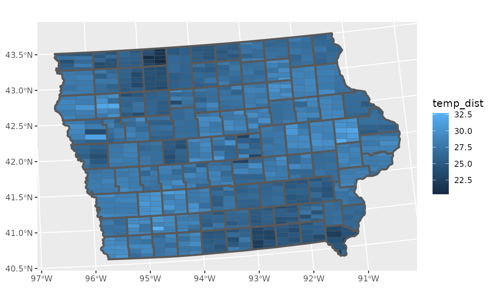

An introduction to ggdibbler
ggdibbler-vignette.RmdAbout
ggdibbler is an R package for implementing signal
suppression in ggplot2. Usually, uncertainty visualisation focuses on
expressing uncertainty as a distribution or probability, whereas
ggdibble differentiates itself by viewing an uncertainty visualisation
as a transformation of an existing graphic that incorperates
uncertainty. The package allows you to replace any existing variable of
observations in a graphic, with a variable of distributons. It is
particularly useful for visualisations of estimates, such as a mean. You
provide ggdibble with code for an existing plot, but repalace one of the
variables with a distribution, and it will convert the visualisation
into it’s signal supressed counterpart.
Installation
You can install the development version of ggdibbler from GitHub with:
# install.packages("pak")
pak::pak("harriet-mason/ggdibbler")Examples
It may not be obvious from the outset why we would want this package,
after all, there are plenty of geoms and plenty of ways to visualise
distributions, so what is the point of this? The value of
ggdibbler becomes aparent when we look at a couples of use
cases for the software.
Currently, the primary useage of ggdibbler is to provide several
variations on geom_sf. There are other use cases for
ggdibbler as we will see below, but as of right now, the
variation on other geoms are not as fleshed out.
Spatial example
Let us look at one of the example data sets that comes with
ggdibbler,toy_temp. This data set is a
simulated data set that represents observations collected from citizen
scientists in several counties in Iowa. Each county has several
measurements made by individual scientists at the same time on the same
day, but their exact location is not provided to preserve anonymity.
Different counties can have different numbers of citizen scientists and
the temperature measurements can have a significant amount of variance
due to the recordings being made by different people in slightly
different locations within the county. Each recorded temperature comes
with the county the citizen scientist belongs to, the temperature
recording the made, and the scientist’s ID number. There are also
variables to define spatial elements of the county, such as it’s
geometry, and the county centroid’s longitude and latitude.
glimpse(toy_temp)
#> Rows: 990
#> Columns: 6
#> $ county_name <chr> "Lyon County", "Dubuque County", "Crawford County", "…
#> $ county_geometry <MULTIPOLYGON [m]> MULTIPOLYGON (((274155.2 -1..., MULTIPOL…
#> $ county_longitude <dbl> 306173.3, 746092.2, 381255.2, 696287.1, 729905.9, 306…
#> $ county_latitude <dbl> -172880.7, -239861.5, -318675.9, -153979.0, -280551.9…
#> $ recorded_temp <dbl> 21.08486, 28.94271, 26.39905, 27.10343, 34.20208, 20.…
#> $ scientistID <chr> "#74991", "#22780", "#55325", "#46379", "#84259", "#9…While it is slightly difficult, we can view the individual observations by plotting them to the centroid longitude and latitude (with a little jitter) and drawing the counties in the background for referece.
# Plot Raw Data
ggplot(toy_temp) +
geom_sf(aes(geometry=county_geometry)) +
geom_jitter(aes(x=county_longitude, y=county_latitude, colour=recorded_temp),
width=5000, height =5000, alpha=0.7)Typically, we would not visualise the data this way. A much more common approach would be to take the average of each county and display that in a choropleth map, displayed below.
# Mean data
toy_temp_mean <- toy_temp |>
group_by(county_name) |>
summarise(temp_mean = mean(recorded_temp))
# Plot Mean Data
ggplot(toy_temp_mean) +
geom_sf(aes(geometry=county_geometry, fill=temp_mean))This plot is fine, but it does loose a key piece of information, specifically the understanding that this mean is an estimate. That means that this estimate has a sampling distribuiton that is invisible to us when we make this visualisation.
We can see that there is a wave like pattern in the data, but sometimes spatial patterns are a result of significant differences in population, and may disappear if we were to include the variance of the estimates, we can calculate that with the average.
# Mean and variance data
toy_temp_est <- toy_temp |>
group_by(county_name) |>
summarise(temp_mean = mean(recorded_temp),
temp_se = sd(recorded_temp)/sqrt(n())) Getting an estimate along with its variance is also a common format governments supply data. Just like in our citizen scientist case, this if often done to preserve anonymity.
The problem with this format of data, is that there is no way for us to include the variance information in the visualisation. We can only visualise the estimate and its variance separately.
This is where ggdibbler comes in. ggdibbler is a ggplot
extension that allows us to visulise distributions where we could
previously only visualise single values. Instead of trying to use the
estimate and its variance as different values, we combine them as a
single distribution variable thanks to the distributional
package and then can use it with the ggdibbler version of
geom_sf, geom_sf_sample.
# Distribution
toy_temp_dist <- toy_temp_est |>
mutate(temp_dist = dist_normal(temp_mean, temp_se)) |>
select(county_name, temp_dist)
# Plot Distribution Data
ggplot(toy_temp_dist) +
geom_sf_sample(aes(geometry=county_geometry, fill=temp_dist))
To maintain flexibility, the geom_sf_sample does not
highlight the original boundary lines, but that can be easily added just
by adding another layer.
ggplot(toy_temp_dist) +
geom_sf_sample(aes(geometry = county_geometry, fill=temp_dist), linewidth=0.1) +
geom_sf(aes(geometry = county_geometry), fill=NA, linewidth=1) 